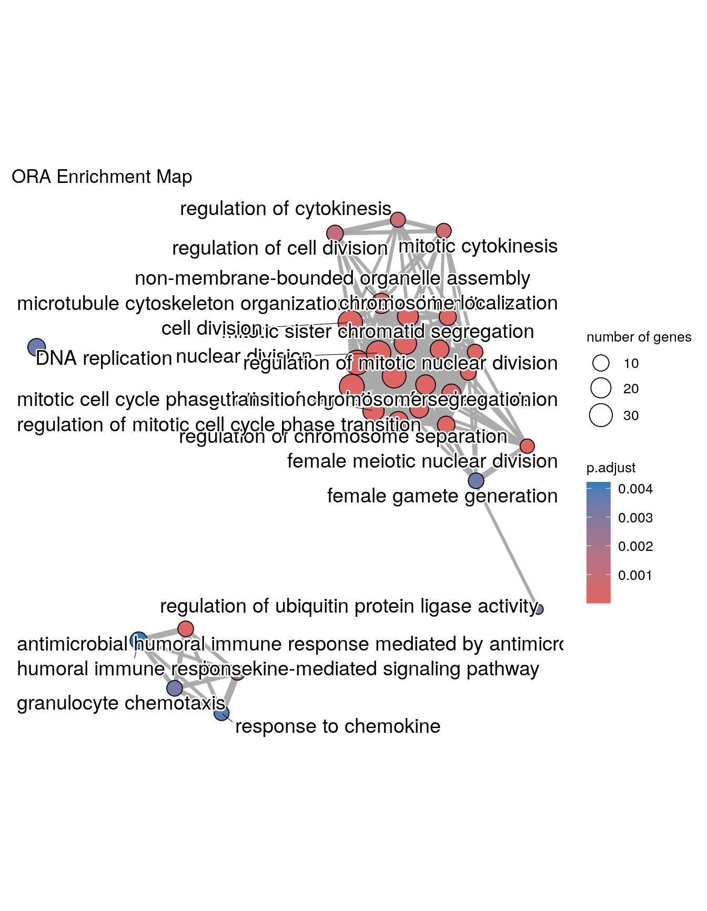
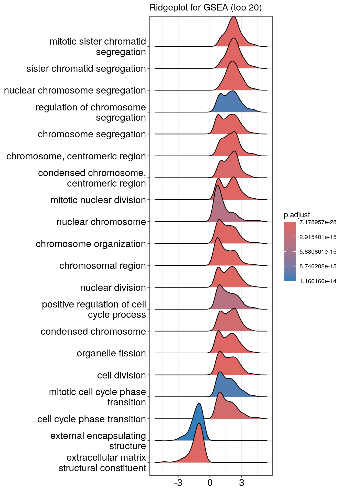

Optional Module 8 Lab 3: Automated Enrichment and Visualisation Lab using clusterProfiler
This work is licensed under a Creative Commons Attribution-ShareAlike 3.0 Unported License. This means that you are able to copy, share and modify the work, as long as the result is distributed under the same license.
By Chaitra Sarathy
clusterProfiler lab
clusterProfiler is an R package that implements methods to perform both functional annotation and visualization of genes and gene clusters.
- It can accept data from a variety of experimental sources such as DNA-seq, RNA-seq, microarray, Mass spectometry, meRIP-seq, m6A-seq, ATAC-seq and ChIP-seq and thus can be applied in diverse scenarios.
- It provides a tidy interface to access, manipulate, and visualize enrichment results to help users achieve efficient data interpretation.
clusterProfiler is released within the Bioconductor project and the source code is hosted on GitHub.
Goal
- Learn how to write R scripts for going from gene list to enriched pathways
- Learn how to run over representation analysis (ORA) and gene set enrichment analysis (GSEA) using functions in the clusterProfiler R package
- Explore results of enrichment analysis using various visualisation options in clusterProfiler
Supported Analysis
For functional annotation, clusterprofiler provides R functions to perform
- Over Representation Analysis
- Gene Set Enrichment Analysis
- Biological theme comparison
In this practical, we will be learning how to run Over Representation Analysis and Gene Set Enrichment Analysis in 2 exercises. Follow the step-by-step checklist.
Before starting the exercises, make sure that clusterProfiler and other required packages are installed and loaded. Run “prework_module8_clusterprofiler.R”
before following this module.
Install and load packages
To run enrichment analysis using clusterProfiler, we need a few additional packages org.Hs.eg.db, DOSE, tidyverse, enrichplot, ggupset. Install and load all necessary packages using this code:
# install and load the package manager
if (!requireNamespace("BiocManager", quietly = TRUE))
install.packages("BiocManager")
# list the required bioconductor packages
bio.pkgs = c("clusterProfiler", "org.Hs.eg.db", "DOSE", "tidyverse", "enrichplot", "ggupset")
# install
BiocManager::install(bio.pkgs)## 'getOption("repos")' replaces Bioconductor standard repositories, see
## 'help("repositories", package = "BiocManager")' for details.
## Replacement repositories:
## CRAN: https://p3m.dev/cran/__linux__/jammy/latest## Bioconductor version 3.19 (BiocManager 1.30.23), R 4.4.0 (2024-04-24)## Warning: package(s) not installed when version(s) same as or greater than current; use
## `force = TRUE` to re-install: 'clusterProfiler' 'org.Hs.eg.db' 'DOSE'
## 'tidyverse' 'enrichplot' 'ggupset'## Installation paths not writeable, unable to update packages
## path: /usr/local/lib/R/library
## packages:
## foreign, KernSmooth, MASS, nlme, survival## Old packages: 'BiocNeighbors', 'BiocStyle', 'Biostrings', 'cli', 'crayon',
## 'DBI', 'digest', 'downlit', 'dqrng', 'evaluate', 'filehash', 'GenomicRanges',
## 'GSVA', 'KEGGREST', 'knitr', 'limma', 'locfit', 'markdown', 'PKI',
## 'RcppArmadillo', 'reticulate', 'rlang', 'rsconnect', 'scater', 'secretbase',
## 'SparseM', 'spatstat.data', 'spatstat.sparse', 'spatstat.utils', 'targets',
## 'xfun', 'XML', 'xts'# load all at once
invisible(lapply(bio.pkgs, function(x) library(x, character.only=TRUE, quietly = T)))## ## clusterProfiler v4.12.0 For help: https://yulab-smu.top/biomedical-knowledge-mining-book/
##
## If you use clusterProfiler in published research, please cite:
## T Wu, E Hu, S Xu, M Chen, P Guo, Z Dai, T Feng, L Zhou, W Tang, L Zhan, X Fu, S Liu, X Bo, and G Yu. clusterProfiler 4.0: A universal enrichment tool for interpreting omics data. The Innovation. 2021, 2(3):100141##
## Attaching package: 'clusterProfiler'## The following object is masked from 'package:stats':
##
## filter##
## Attaching package: 'BiocGenerics'## The following objects are masked from 'package:stats':
##
## IQR, mad, sd, var, xtabs## The following objects are masked from 'package:base':
##
## anyDuplicated, aperm, append, as.data.frame, basename, cbind,
## colnames, dirname, do.call, duplicated, eval, evalq, Filter, Find,
## get, grep, grepl, intersect, is.unsorted, lapply, Map, mapply,
## match, mget, order, paste, pmax, pmax.int, pmin, pmin.int,
## Position, rank, rbind, Reduce, rownames, sapply, setdiff, table,
## tapply, union, unique, unsplit, which.max, which.min## Welcome to Bioconductor
##
## Vignettes contain introductory material; view with
## 'browseVignettes()'. To cite Bioconductor, see
## 'citation("Biobase")', and for packages 'citation("pkgname")'.##
## Attaching package: 'S4Vectors'## The following object is masked from 'package:clusterProfiler':
##
## rename## The following object is masked from 'package:utils':
##
## findMatches## The following objects are masked from 'package:base':
##
## expand.grid, I, unname##
## Attaching package: 'IRanges'## The following object is masked from 'package:clusterProfiler':
##
## slice##
## Attaching package: 'AnnotationDbi'## The following object is masked from 'package:clusterProfiler':
##
## select## ## DOSE v3.30.1 For help: https://yulab-smu.top/biomedical-knowledge-mining-book/
##
## If you use DOSE in published research, please cite:
## Guangchuang Yu, Li-Gen Wang, Guang-Rong Yan, Qing-Yu He. DOSE: an R/Bioconductor package for Disease Ontology Semantic and Enrichment analysis. Bioinformatics 2015, 31(4):608-609## ── Attaching core tidyverse packages ──────────────────────── tidyverse 2.0.0 ──
## ✔ dplyr 1.1.4 ✔ readr 2.1.5
## ✔ forcats 1.0.0 ✔ stringr 1.5.1
## ✔ ggplot2 3.5.1 ✔ tibble 3.2.1
## ✔ lubridate 1.9.3 ✔ tidyr 1.3.1
## ✔ purrr 1.0.2
## ── Conflicts ────────────────────────────────────────── tidyverse_conflicts() ──
## ✖ lubridate::%within%() masks IRanges::%within%()
## ✖ dplyr::collapse() masks IRanges::collapse()
## ✖ dplyr::combine() masks Biobase::combine(), BiocGenerics::combine()
## ✖ dplyr::desc() masks IRanges::desc()
## ✖ tidyr::expand() masks S4Vectors::expand()
## ✖ dplyr::filter() masks clusterProfiler::filter(), stats::filter()
## ✖ dplyr::first() masks S4Vectors::first()
## ✖ dplyr::lag() masks stats::lag()
## ✖ ggplot2::Position() masks BiocGenerics::Position(), base::Position()
## ✖ purrr::reduce() masks IRanges::reduce()
## ✖ dplyr::rename() masks S4Vectors::rename(), clusterProfiler::rename()
## ✖ lubridate::second() masks S4Vectors::second()
## ✖ lubridate::second<-() masks S4Vectors::second<-()
## ✖ dplyr::select() masks AnnotationDbi::select(), clusterProfiler::select()
## ✖ purrr::simplify() masks clusterProfiler::simplify()
## ✖ dplyr::slice() masks IRanges::slice(), clusterProfiler::slice()
## ℹ Use the conflicted package (<http://conflicted.r-lib.org/>) to force all conflicts to become errorsOnce all packages are loaded, we can get started with exercises.
Exercise 1a. Over representation analysis
clusterProfiler supports over representation analysis against various sources such as GO annotation, KEGG pathway, MSigDB to name a few. For the full list please refer this link.
In this exercise, we will learn over representation analysis using the gene ontology annotations. This is implemented in the function enrichGO().
Data for enrichment using clusterProfiler
Let us start with loading the dataset geneList that is provided by the package DOSE.
DOSE provides an example dataset geneList. It comes from
analysis of a breast
cancer dataset that had 200 samples, including 29 samples in grade
I, 136 samples in grade II and 35 samples in grade III. The ratios of
geometric means of grade III samples versus geometric means of grade I
samples were computed. Logarithm of these ratios (base 2) are stored in
geneList dataset.
A variable called geneList should be loaded in your R environment. What does it look like?
## 4312 8318 10874 55143 55388 991
## 4.572613 4.514594 4.418218 4.144075 3.876258 3.677857As you can see, first line of output has names of genes in Entrez gene ID format and the second line has fold change values of genes.
Data for over representation analysis using clusterProfiler
For running an over representation analysis, we need only a list of gene names or IDs. Let us extract out the genes which had an expression value >2 or <-2 using the function names()
## [1] "4312" "8318" "10874" "55143" "55388" "991"gene has a list of 207 genes.
Perform GO over representation analysis
Now, run enrichGO() with this list of genes and examine the results
Results of GO over representation analysis
Examine the results. Do you notice any similarities or differences between this output format and your results from Module 2 gProfiler?
The output table is stored in ego@result. In this example, 152 processes were significantly enriched.
## ONTOLOGY ID Description GeneRatio
## GO:0098813 BP GO:0098813 nuclear chromosome segregation 34/197
## GO:0000070 BP GO:0000070 mitotic sister chromatid segregation 28/197
## GO:0000819 BP GO:0000819 sister chromatid segregation 30/197
## GO:0140014 BP GO:0140014 mitotic nuclear division 32/197
## GO:0007059 BP GO:0007059 chromosome segregation 37/197
## GO:0000280 BP GO:0000280 nuclear division 37/197
## BgRatio pvalue p.adjust qvalue
## GO:0098813 238/11586 3.730986e-22 1.124892e-18 1.034858e-18
## GO:0000070 152/11586 1.909540e-21 2.878631e-18 2.648230e-18
## GO:0000819 185/11586 3.017475e-21 3.032563e-18 2.789841e-18
## GO:0140014 224/11586 7.008600e-21 4.403280e-18 4.050849e-18
## GO:0007059 319/11586 7.302289e-21 4.403280e-18 4.050849e-18
## GO:0000280 327/11586 1.726930e-20 8.677821e-18 7.983262e-18
## geneID
## GO:0098813 CDCA8/CDC20/KIF23/CENPE/MYBL2/CCNB2/NDC80/TOP2A/NCAPH/ASPM/DLGAP5/UBE2C/SKA1/NUSAP1/TPX2/TACC3/NEK2/CDK1/MAD2L1/KIF18A/CDT1/BIRC5/KIF11/TTK/NCAPG/AURKB/TRIP13/PRC1/KIFC1/KIF18B/AURKA/CCNB1/KIF4A/PTTG1
## GO:0000070 CDCA8/CDC20/KIF23/CENPE/MYBL2/NDC80/NCAPH/DLGAP5/UBE2C/SKA1/NUSAP1/TPX2/NEK2/CDK1/MAD2L1/KIF18A/CDT1/BIRC5/KIF11/TTK/NCAPG/AURKB/TRIP13/PRC1/KIFC1/KIF18B/CCNB1/KIF4A
## GO:0000819 CDCA8/CDC20/KIF23/CENPE/MYBL2/NDC80/TOP2A/NCAPH/DLGAP5/UBE2C/SKA1/NUSAP1/TPX2/TACC3/NEK2/CDK1/MAD2L1/KIF18A/CDT1/BIRC5/KIF11/TTK/NCAPG/AURKB/TRIP13/PRC1/KIFC1/KIF18B/CCNB1/KIF4A
## GO:0140014 CDCA8/CDC20/KIF23/CENPE/MYBL2/NDC80/NCAPH/DLGAP5/UBE2C/SKA1/NUSAP1/TPX2/NEK2/UBE2S/CDK1/MAD2L1/KIF18A/CDT1/BIRC5/KIF11/TTK/NCAPG/AURKB/CHEK1/TRIP13/PRC1/KIFC1/KIF18B/AURKA/CCNB1/KIF4A/BMP4
## GO:0007059 CDCA8/CDC20/KIF23/CENPE/MYBL2/CCNB2/NDC80/TOP2A/NCAPH/ASPM/DLGAP5/UBE2C/HJURP/SKA1/NUSAP1/TPX2/TACC3/NEK2/CENPM/CENPN/CDK1/MAD2L1/KIF18A/CDT1/BIRC5/KIF11/TTK/NCAPG/AURKB/TRIP13/PRC1/KIFC1/KIF18B/AURKA/CCNB1/KIF4A/PTTG1
## GO:0000280 CDCA8/CDC20/KIF23/CENPE/MYBL2/CCNB2/NDC80/TOP2A/NCAPH/ASPM/DLGAP5/UBE2C/SKA1/NUSAP1/TPX2/NEK2/RAD51AP1/UBE2S/CDK1/MAD2L1/KIF18A/CDT1/BIRC5/KIF11/TTK/NCAPG/AURKB/CHEK1/TRIP13/PRC1/KIFC1/KIF18B/AURKA/CCNB1/KIF4A/PTTG1/BMP4
## Count
## GO:0098813 34
## GO:0000070 28
## GO:0000819 30
## GO:0140014 32
## GO:0007059 37
## GO:0000280 37## [1] 152Input options for enrichGO():
-
The default option for
geneis entrez gene ID, but other gene ID formats are supported in GO analyses. You should specify thekeyTypeparameter to specify the input gene ID type (More details below) -
We have selected all genes measured in the experiment as our
universe. -
You can specify subontology using the argument
ont. It takes one option among - “BP”, “MF”, “CC” or “ALL” for biological process, molecular function, cellular co-localization or all subontologies respectively. -
If
readableis set toTRUE, the input gene IDs will be converted to gene symbols. -
OrgDb is the genome annotation database of organism that your gene
list is coming from. Since our
geneListis from human breast cancer, we have provided human OrgDb object (org.Hs.eg.db). See the section “A note on supported organisms” for more details.
Gene IDs can be converted to different formats using
bitr() function.
# convert from entrez gene ID to ensembl ID and gene symbols
gene.df <- bitr(gene,
fromType = "ENTREZID",
toType = c("ENSEMBL", "SYMBOL"),
OrgDb = org.Hs.eg.db)## 'select()' returned 1:many mapping between keys and columns## Warning in bitr(gene, fromType = "ENTREZID", toType = c("ENSEMBL", "SYMBOL"), :
## 0.48% of input gene IDs are fail to map...## ENTREZID ENSEMBL SYMBOL
## 1 4312 ENSG00000196611 MMP1
## 2 8318 ENSG00000093009 CDC45
## 3 10874 ENSG00000109255 NMU
## 4 55143 ENSG00000134690 CDCA8
## 5 55388 ENSG00000065328 MCM10
## 6 991 ENSG00000117399 CDC20
Various options for keyType can be found using
keytypes(<name of organism annotation>). For example:
keytypes(org.Hs.eg.db)
Simplify enrichGO() results
GO enrichment typically contains redundant terms. You may use the simplify() function to reduce redundancy of enriched GO terms using the default parameters. Please note that simplifying is not always a necessary step. You can choose to omit it, based on the nature of your result tables.
## [1] 46Exercise 1b. Visualise the results of GO over representation analysis
Barplot
Bar plot is the most widely used method to visualize enriched terms. It shows the enrichment scores (e.g. p values) and gene count or ratio as bar height and color. You can specify the number of terms (most significant) to display via the showCategory parameter.
 You can plot other variables such as
You can plot other variables such as log10(p.adjust) by modifying using mutate() from the tidyverse package
mutate(ego.sim, qscore = -log(p.adjust, base=10)) %>%
barplot(x="qscore", showCategory=20) + ggtitle("ORA barplot - qvalue (top 20)")
Dotplot
Dot plot is very similar to bar plot. It has additional capability to encode another score as dot size.

Enrichment Map
Enrichment map organizes enriched terms into a network with edges connecting overlapping gene sets. In this way, mutually overlapping gene sets are tend to cluster together, making it easy to identify functional module. Before making the map, similarity must be calculated. This can be done using pairwise_termsim()
## Warning: ggrepel: 11 unlabeled data points (too many overlaps). Consider
## increasing max.overlaps
Upset plot
The upsetplot is for visualizing the complex association between genes and gene sets. It emphasizes the gene overlapping among different gene sets.

Details about the input arguments for enrichGO()
gene a vector of entrez gene ID.
OrgDb OrgDb object
keyType keytype of input gene
ont One of “BP”, “MF”, and “CC” subontologies, or “ALL” for all three
pvalueCutoff adjusted pvalue cutoff on enrichment tests to report
pAdjustMethod one of “holm”, “hochberg”, “hommel”, “bonferroni”, “BH”, “BY”, “fdr”, “none”
universe background genes. If missing, the all genes listed in the database (eg TERM2GENE table) will be used as background
qvalueCutoff qvalue cutoff on enrichment tests to report as significant. Tests must pass i) pvalueCutoff on unadjusted pvalues, ii) pvalueCutoff on adjusted pvalues and iii) qvalueCutoff on qvalues to be reported
minGSSize minimal size of genes annotated by Ontology term for testing
maxGSSize maximal size of genes annotated for testing
readable whether mapping gene ID to gene Name
A note on supported organisms
GO analyses in clusterProfiler support organisms that have an OrgDb object available. OrgDb (organism databases) objects are databases that contain genome annotations and thus, they are best for converting gene IDs or obtaining GO information for current genome builds.A list of organism databases can be found here
Exercise 2a: Gene set enrichment analysis
Data for running gene set enrichment analysis in clusterProfiler
GSEA analysis requires a ranked gene list, which contains three features:
- numeric vector: fold change or other type of numerical variable
- named vector: every number has a name, the corresponding gene ID
- sorted vector: number should be sorted in decreasing order
Since geneList is already in the desired format, we will use it for this exercise. If you haven’t loaded it, use the command below to import the data. Please see the above section “Data for enrichment using clusterProfiler” for details regarding the dataset.
## 4312 8318 10874 55143 55388 991
## 4.572613 4.514594 4.418218 4.144075 3.876258 3.677857Perform GO gene set enrichment analysis
The clusterProfiler package provides the gseGO() function for gene set enrichment analysis using gene ontology. You can run GSEA as below:
Results of GO gene set enrichment analysis
Examine the results. Do you notice any similarities or differences between this output format and your results from Module 2 GSEA?
The output table is stored in egsea@result. In this example, 512 processes were significantly enriched.
## ONTOLOGY ID Description setSize
## GO:0051276 BP GO:0051276 chromosome organization 473
## GO:0098813 BP GO:0098813 nuclear chromosome segregation 238
## GO:0007059 BP GO:0007059 chromosome segregation 319
## GO:0000819 BP GO:0000819 sister chromatid segregation 185
## GO:0000070 BP GO:0000070 mitotic sister chromatid segregation 152
## GO:0000280 BP GO:0000280 nuclear division 327
## enrichmentScore NES pvalue p.adjust qvalue rank
## GO:0051276 0.5201824 2.544408 9.093519e-32 1.291280e-28 7.676844e-29 1374
## GO:0098813 0.6333337 2.877824 3.191110e-30 1.768253e-27 1.051252e-27 449
## GO:0007059 0.5847891 2.734065 3.735745e-30 1.768253e-27 1.051252e-27 1374
## GO:0000819 0.6606162 2.927964 4.701535e-27 1.669045e-24 9.922713e-25 449
## GO:0000070 0.6861425 2.972105 5.809969e-26 1.650031e-23 9.809674e-24 532
## GO:0000280 0.5414575 2.545927 5.146366e-25 1.217973e-22 7.241027e-23 1246
## leading_edge
## GO:0051276 tags=24%, list=11%, signal=22%
## GO:0098813 tags=23%, list=4%, signal=22%
## GO:0007059 tags=27%, list=11%, signal=25%
## GO:0000819 tags=25%, list=4%, signal=24%
## GO:0000070 tags=29%, list=4%, signal=28%
## GO:0000280 tags=26%, list=10%, signal=24%
## core_enrichment
## GO:0051276 8318/55143/991/9493/1062/4605/10403/7153/23397/9787/11065/55355/220134/51203/22974/10460/4751/55839/983/4085/9837/81930/81620/332/3832/2146/7272/64151/9212/51659/9319/9055/3833/146909/891/24137/4174/9232/4171/9928/11004/990/5347/29127/26255/701/9156/11130/57405/10615/3159/79075/2491/8438/9700/5888/898/3149/11339/9134/4175/4173/2237/22948/5984/9918/1058/84296/2643/699/4609/1063/5111/64785/9401/26271/55055/641/1763/54892/8357/3024/4176/3148/3006/4436/5982/9735/908/23310/8607/3008/10051/10576/3009/4172/9631/83990/5885/11200/2072/84722/51115/7283/5983/4678/5588/54908/10592/51377/4683/54069
## GO:0098813 55143/991/9493/1062/4605/9133/10403/7153/23397/259266/9787/11065/220134/51203/22974/10460/4751/983/4085/81930/81620/332/3832/7272/64151/9212/9319/9055/3833/146909/6790/891/24137/9232/9928/11004/990/5347/29127/26255/701/11130/57405/10615/1894/2491/9700/898/9134/9918/699/1063/26271/55055
## GO:0007059 55143/991/9493/1062/4605/9133/10403/7153/23397/259266/9787/11065/55355/220134/51203/22974/10460/4751/79019/55839/983/4085/81930/81620/332/3832/7272/64151/9212/9319/9055/3833/146909/6790/891/24137/9232/9928/11004/990/5347/29127/26255/701/11130/79682/57405/10615/1894/2491/9700/898/11339/4288/54801/9134/29899/9918/699/6491/1063/26271/55055/54892/29901/79980/9735/55732/81624/23310/292/10051/1104/5359/83990/5885/11200/203068/84722/51115/7283/51647/54908/10592/6732/54069
## GO:0000819 55143/991/9493/1062/4605/10403/7153/23397/9787/11065/220134/51203/22974/10460/4751/983/4085/81930/81620/332/3832/7272/64151/9212/9319/9055/3833/146909/891/24137/9928/11004/990/5347/29127/701/11130/57405/10615/2491/9700/9918/699/1063/26271/55055
## GO:0000070 55143/991/9493/1062/4605/10403/23397/9787/11065/220134/51203/22974/4751/983/4085/81930/81620/332/3832/7272/64151/9212/9319/9055/3833/146909/891/24137/9928/11004/5347/29127/701/11130/57405/10615/2491/9700/9918/699/1063/26271/55055/54892
## GO:0000280 55143/991/9493/1062/4605/9133/10403/7153/23397/259266/9787/11065/220134/51203/22974/4751/10635/27338/983/4085/81930/81620/332/3832/7272/64151/9212/1111/9319/9055/3833/146909/6790/891/24137/9232/9928/1164/11004/4603/5347/29127/26255/701/11130/57405/10615/2491/8438/9700/5888/898/4288/9134/2175/91646/994/9918/699/1063/26271/55055/54892/5902/9585/9735/23310/2253/8877/9088/995/10051/79703/1104/79866/83990/5885/11200/2072/940/1761/84722/51115/7283/80010## [1] 517Input options for gseGO()
-
Note that only gene sets having the size within
[
minGSSize,maxGSSize] will be tested. -
Similar to
enrichGO(), you can specify subontology using the argumentont. It takes one option among - “BP”, “MF”, “CC” or “ALL” for biological process, molecular function, cellular co-localization or all subontologies respectively -
pvalueCutoffdefines the cutoff for pvalue that is used for determining significant processes -
Setting
epsto zero improves estimation. -
pAdjustMethodcan be one of “holm”, “hochberg”, “hommel”, “bonferroni”, “BH”, “BY”, “fdr”, “none”
Details about the input arguments for gseGO()
geneList order ranked geneList
ont one of “BP”, “MF”, and “CC” subontologies, or “ALL” for all three
OrgDb OrgDb
keyType keytype of gene
exponent weight of each step
minGSSize minimal size of each geneSet for analyzing
maxGSSize maximal size of genes annotated for testing
eps This parameter sets the boundary for calculating the p value
pvalueCutoff pvalue Cutoff
pAdjustMethod pAdjustMethod one of “holm”, “hochberg”, “hommel”, “bonferroni”, “BH”, “BY”, “fdr”, “none”
verbose print message or not
seed logical
by one of ‘fgsea’ or ‘DOSE’
Exercise 2b. Visualise the results of gene set enrichment analysis
Ridgeline plot
The function ridgeplot() will visualize expression distributions of core enriched genes for GSEA enriched categories. It helps you to interpret up/down-regulated pathways.
## Picking joint bandwidth of 0.286
Running score and preranked list of GSEA result
Running score and preranked list are traditional methods for visualizing GSEA result. You are familiar with these visualisations from Module 2. The function gseaplot() supports visualising both the distribution of the gene set and the enrichment score.


Another method to plot GSEA result is the gseaplot2 function:


Explore other features of clusterProfiler
For other functionalities in clusterProfiler please refer to detailed examples in this book
Bonus - Try it yourself:
Using your knowledge of clusterProfiler, write scripts
to perform the following analysis. Use the geneList
dataset.
-
Run ORA against GO molecular function by converting
geneto uniprot IDs - Run ORA against KEGG pathways, Reactome and Wikipathways databases
- Run GSEA against KEGG pathways, Reactome and Wikipathways databases
-
Use your data to run ORA and GSEA using
clusterProfiler
Hint: clusterProfiler provides different functions for
testing against multiple databases. Refer the book
for complete list.
Ontologies and pathway databases supported by clusterProfiler
- Disease Ontology (via DOSE)
- Network of Cancer Gene (via DOSE)
- DisGeNET (via DOSE)
- Gene Ontology (supports many species with GO annotation query online via AnnotationHub)
- KEGG Pathway and Module with latest online data (supports more than 4000 species listed in http://www.genome.jp/kegg/catalog/org_list.html)
- Reactome Pathway (via ReactomePA)
- DAVID (via RDAVIDWebService)
- Molecular Signatures Database
- hallmark gene sets
- positional gene sets
- curated gene sets
- motif gene sets
- computational gene sets
- GO gene sets
- oncogenic signatures
- immunologic signatures
- Other Annotations
- from other sources (e.g. DisGeNET as an example)
- user’s annotation
- customized ontology
- and many others
All publications describing clusterProfiler can be found here:
- T Wu#, E Hu#, S Xu, M Chen, P Guo, Z Dai, T Feng, L Zhou, W Tang, L Zhan, X Fu, S Liu, X Bo*, G Yu*. clusterProfiler 4.0: A universal enrichment tool for interpreting omics data. The Innovation. 2021, 2(3):100141. doi: 10.1016/j.xinn.2021.100141
- G Yu*. Gene Ontology Semantic Similarity Analysis Using GOSemSim. In: Kidder B. (eds) Stem Cell Transcriptional Networks. Methods in Molecular Biology. 2020, 2117:207-215. Humana, New York, NY. doi: 10.1007/978-1-0716-0301-7_11
- G Yu*. Using meshes for MeSH term enrichment and semantic analyses. Bioinformatics. 2018, 34(21):3766–3767. doi: 10.1093/bioinformatics/bty410
- G Yu, QY He*. ReactomePA: an R/Bioconductor package for reactome pathway analysis and visualization. Molecular BioSystems. 2016, 12(2):477-479. doi: 10.1039/C5MB00663E
- G Yu*, LG Wang, and QY He*. ChIPseeker: an R/Bioconductor package for ChIP peak annotation, comparison and visualization. Bioinformatics. 2015, 31(14):2382-2383. doi: 10.1093/bioinformatics/btv145
- G Yu*, LG Wang, GR Yan, QY He*. DOSE: an R/Bioconductor package for Disease Ontology Semantic and Enrichment analysis. Bioinformatics. 2015, 31(4):608-609. doi: 10.1093/bioinformatics/btu684
- G Yu, LG Wang, Y Han and QY He*. clusterProfiler: an R package for comparing biological themes among gene clusters. OMICS: A Journal of Integrative Biology. 2012, 16(5):284-287. doi: 10.1089/omi.2011.0118
- G Yu, F Li, Y Qin, X Bo*, Y Wu, S Wang*. GOSemSim: an R package for measuring semantic similarity among GO terms and gene products. Bioinformatics. 2010, 26(7):976-978. doi: 10.1093/bioinformatics/btq064